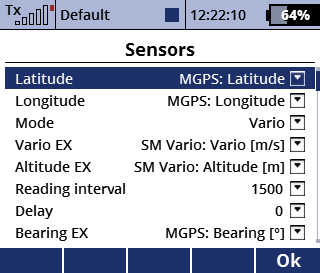
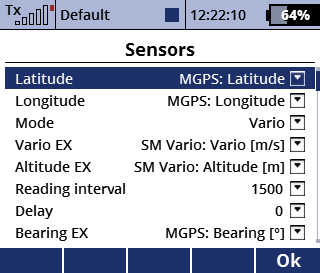

Example: 'Weighted vectors' vs 'Best subsequence'
Constantly guides you to the thermals on your path.
Inspired by a system used on manned gliders, this app helps to determine the optimal circling point in thermals. A periodic speech output tells the pilot the bearing and distance to the point where the center of the circle should be shifted to. Therefore a gps and a variometer or altitude sensor are required.
Example: 'Weighted vectors' vs 'Best subsequence'
The GPS position and the vario values are queried in regular intervals.
Every point is displayed in a telemetry frame with the circle radius being proportional to the climb value.
At every time the flight path is shortened to contain a turn of at most 360°, thus it always represents the last circle.
Based on the climb values along the path and the selected algorithm, the best point is determined.
The announcement then contains the bearing and distance of the best point relative to the center point of the last circle as well as the climb rate at that point if available.
For example, the announcement "85° 20m 2m/s" recommends a 20 meter deviation to the east, where a climb rate of 2m/s can be expected.
The best point is always displayed as a square.
The app currently offers three different evaluation algorithms, each with it's own ideal use cases. The following list is just a brief overview, but a very detailed explanation can be found here.
Best subsequence: Calculates the sum of climb rates over each subsequence of the current path with the set length.
It then returns the middle point of the subsequence with the highest overall sum.
Weighted vectors: Takes the deviation of a point relative to the circle's center point as a vector and multiplies it with a weight that is proportional to the climb rate at that point. Once all vectors are added together, the resulting vector points to the best spot.
Weighted vectors [bias]: Very similar to the algorithm above, but does not recommend as aggressive deviations. This one takes a 'not good but better than nothing' approach.
 



Switch: disables the speech output and recording of new points. When no switch is selected it is always turned on.
Reading interval: The intervall [ms] at which new points and climb rates are recorded.
Announcement interval: The interval [s] at which the recommended deviation is announced.
Enable search mode: Define a switch that enables the search mode. In this mode, the path is not shortened to one full circle and the announcement uses the current position as the reference point instead of the average position.
Always use algorithm 1 in search mode: When this is checked and search mode is active, the app will always use the best-subsequence algorithm which is the obvious choice for searching thermals.
Delay: Adds an artificial delay to compensate the delay most vario/altitude sensors have.
Latitude, Longitude, Vario EX, Altitude EX: Select a sensor here.
Mode: The app features the modes 'vario' and 'altitude difference'. When 'altitude difference' is selected, the vario value at a point is calculated as the difference to the last point.
Algorithm switch: This switch can be used to change the algorithm in flight. If no switch is assigned, the algorithm can be chosen manually.
Minimum sequence length: The minimum required amount of data points to enable speech output.
Maximum sequence length: Upper limit for the amount of data points. Prevents the path from getting very long if it does not contain a full circle.
Best sequence length: Sets the length of the subsequences that are examined by the 'best subsequence' algorithm. The higher it is the wider are the inspected areas.
Expected climb rate: When checked, the app attempts to estimate the climb rate at the best point computed previously. This climb rate affects the size of the filled square in the telemetry frame and is also announced as part of the voice output.
Zoom: A [proportional] input for manual zoom of the telemetry frame. When no input is selected or if the input is in it's lowest position the autozoom feature is active. Autozoom is the highest zoom so that all points are in the frame.
Circle radius: The radius of the circles in the telemetry frame equals this value multiplied by the climb rate.
Zoom range: The range of zoom levels that can be reached with the zoom switch/input.